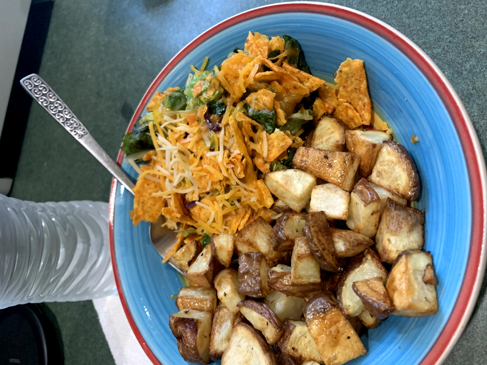

Vegetable Mac N Cheese
A creamy macaroni and cheese recipe with sauteed vegetables of choice.

Potato Taco Salad
A blend of seasoned potato cubes with chips, queso, onion, and other vegetables to mix in.

Homemade Pierogies
Simple, easy to make pierogies. Made from scratch and tossed with onion for a brighter flavor.

Sourdough Bread & Cheese Spread
A classic sourdough from a starter paired with an assorment of cheeses.